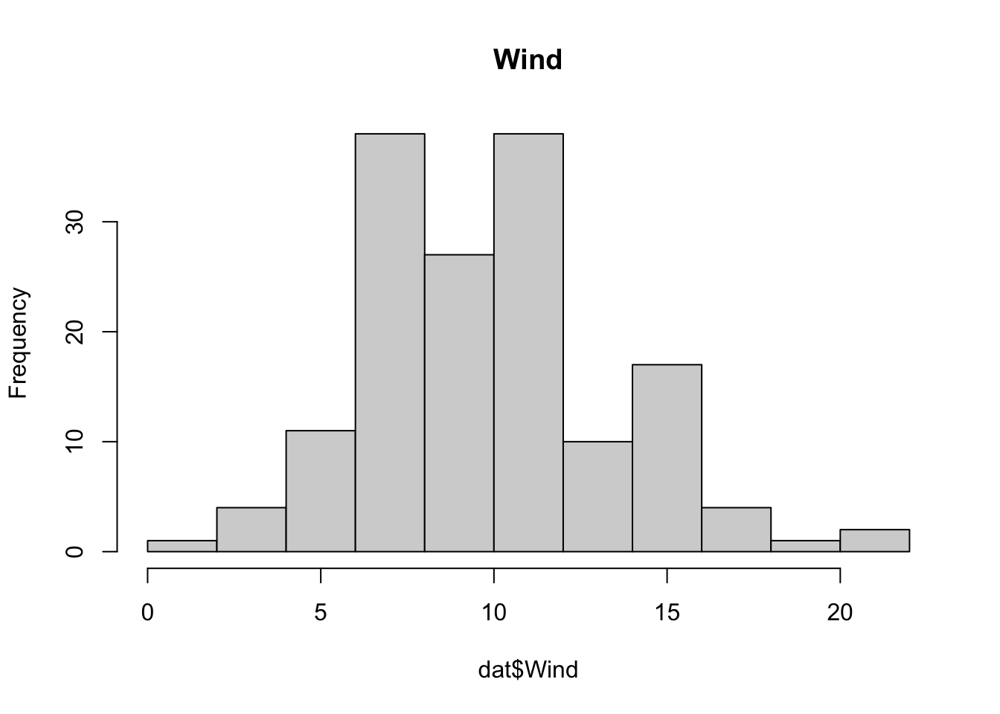
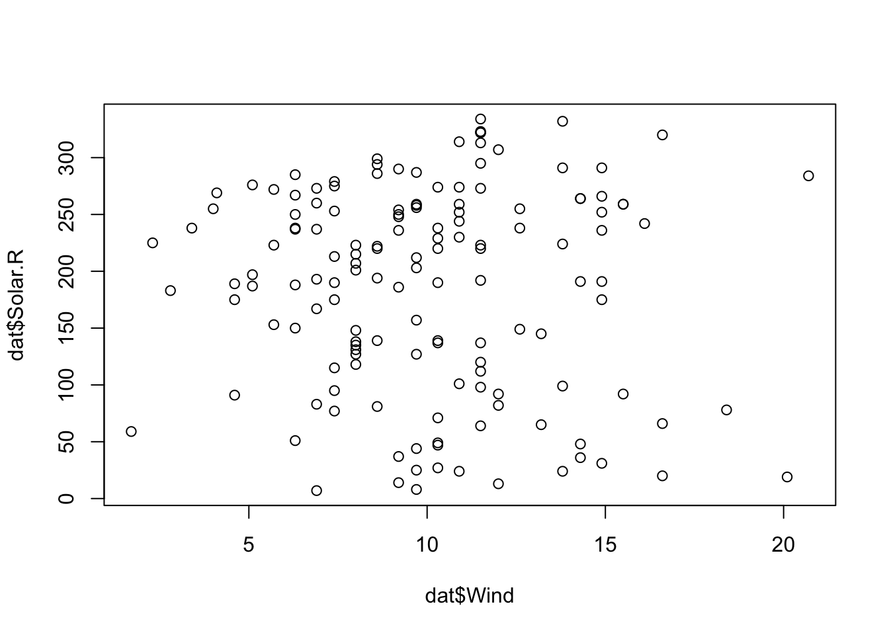
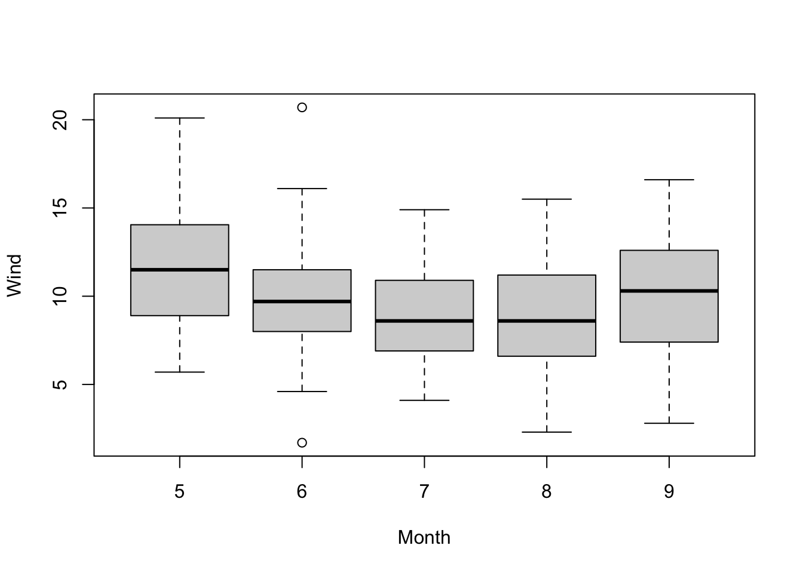

install.packages(LIBRARY)1 Getting Started
1.1 Organization of this book
The aim of this book is to introduce you to the main techniques and concepts that are used when performing regression analyses in applied settings. This book is organized in three parts:
- Introduction and philosophy: The first part of this book provides a general introduction to Bayesian inference, starting with the internal logic (likelihood, prior, posterior), a short introduction on posterior estimation and interpretation, a section on Bayesian model selection and a overview of the Bayesian workflow
- Bayesian GLMMs: The second part covers how standard GLMMs (which could also be fit in R packages lme4 or glmmTMB) would be implemented in a Bayesian worklow
- Hierarchical models: The third part of the book shows examples of popular hierarchical model structures that may be the reason why you want to use Bayesian inference.
1.2 Your R System
In this course, we work with the combination of R + RStudio.
- R is the calculation engine that performs the computations.
- RStudio is the editor that helps you sending inputs to R and collect outputs.
Make sure you have a recent version of R + RStudio installed on your computer. If you have never used RStudio, here is a good video introducing the basic system and how R and RStudio interact.
1.3 Libraries that you will need
The R engine comes with a number of base functions, but one of the great things about R is that you can extend these base functions by libraries that can be programmed by anyone. In principle, you can install libraries from any website or file. In practice, however, most commonly used libraries are distributed via two major repositories. For statistical methods, this is CRAN, and for bioinformatics, this is Bioconductor.
Click to see more on installing libraries in R
To install a package from a library, use the command
Exchange “LIBRARY” with the name of the library you want to install. The default is to search the package in CRAN, but you can specify other repositories or file locations in the function. For Windows / Mac, R should work out of the box. For other UNIX based systems, may also need to install
build-essential
gfortran
libmagick++-dev
r-base-dev
cmakeIf you are new to installing packages on Debian / Ubuntu, etc., type the following:
sudo apt update && sudo apt install -y --install-recommends build-essential gfortran libmagick++-dev r-base-dev cmakeIn this book, we will often use data sets from the EcoData package, which is not on CRAN, but on a GitHub page. To install the package, if you don’t have the devtools package installed already, first install devtools from CRAN by running
install.packages("devtools")Then install the EcoData package via
devtools::install_github(repo = "TheoreticalEcology/EcoData",
dependencies = T, build_vignettes = T)For your convenience, the EcoData installation also forces the installation of most of the packages needed in this book, so this may take a while. If you want to load only the EcoData package, or if you encounter problems during the install, set dependencies = F, build_vignettes = F.
In addition to that, to be able to run all examples in the book, please install the following additional packages:
install.packages(BayesianTools)
install.packages(rjags)Also, you should install the JAGS (see https://mcmc-jags.sourceforge.io). You can find the downloads for different operating systems at https://sourceforge.net/projects/mcmc-jags/files/JAGS/4.x/
1.4 Assumed R knowledge
As mentioned in the preface, this book assumes that you have basic knowledge about data manipulation (reading in data, removing or selecting columns or rows, calculating means per group etc.) and plotting in R. Note that for both purposes, there are currently two main schools in the R environment which do the same things, but with very different syntax:
- base R, which uses functions such as
plot(),apply(),aggregate() - tidyverse, with packages such as dplyr and ggplot2, which provide functions such as
mutate(),filter()and heavily rely on the%>%pipe operator.
There are many opinions about advantages and disadvantages of the two schools. I’m agnostic about this, or more precisely, I think you should get to know both schools and then decide based on the purpose. I see advantages of tidyverse in particular for data manipulation, while I often prefer baseR plots over ggplot2. To keep it simple, however, all code in this course uses base R.
Note
The tidyverse framework is currently trying to expand to the tasks of statistical / machine learning models as well, trying to streamline statistical workflows. While this certainly has a lot of potential, I don’t see it as general / mature enough to recommend it as a default for the statistical workflow.
In the following box, you will find an exercise that asks you to perform basic plots and data manipulations. To text yourself, please check that you can perform these operations. If you have problems, you should study an introductory R course (for example here) before continuing with this text.
Solution
str()helps us to check the data types of the variables, ensure that they are correct, e.g. categorical variables should be factors and continuous variables should be either num (numeric) or int (integer).summary()returns important summary statistics of our variables and informs us about NAs in the datastr(dat)'data.frame': 153 obs. of 6 variables: $ Ozone : int 41 36 12 18 NA 28 23 19 8 NA ... $ Solar.R: int 190 118 149 313 NA NA 299 99 19 194 ... $ Wind : num 7.4 8 12.6 11.5 14.3 14.9 8.6 13.8 20.1 8.6 ... $ Temp : int 67 72 74 62 56 66 65 59 61 69 ... $ Month : int 5 5 5 5 5 5 5 5 5 5 ... $ Day : int 1 2 3 4 5 6 7 8 9 10 ...summary(dat)Ozone Solar.R Wind Temp Min. : 1.00 Min. : 7.0 Min. : 1.700 Min. :56.00 1st Qu.: 18.00 1st Qu.:115.8 1st Qu.: 7.400 1st Qu.:72.00 Median : 31.50 Median :205.0 Median : 9.700 Median :79.00 Mean : 42.13 Mean :185.9 Mean : 9.958 Mean :77.88 3rd Qu.: 63.25 3rd Qu.:258.8 3rd Qu.:11.500 3rd Qu.:85.00 Max. :168.00 Max. :334.0 Max. :20.700 Max. :97.00 NA's :37 NA's :7 Month Day Min. :5.000 Min. : 1.0 1st Qu.:6.000 1st Qu.: 8.0 Median :7.000 Median :16.0 Mean :6.993 Mean :15.8 3rd Qu.:8.000 3rd Qu.:23.0 Max. :9.000 Max. :31.0There are NAs in Ozone and Solar.R! Also, Month is not a factor!
We have to transform Month into a factor:
dat$Month = as.factor(dat$Month) str(dat)'data.frame': 153 obs. of 6 variables: $ Ozone : int 41 36 12 18 NA 28 23 19 8 NA ... $ Solar.R: int 190 118 149 313 NA NA 299 99 19 194 ... $ Wind : num 7.4 8 12.6 11.5 14.3 14.9 8.6 13.8 20.1 8.6 ... $ Temp : int 67 72 74 62 56 66 65 59 61 69 ... $ Month : Factor w/ 5 levels "5","6","7","8",..: 1 1 1 1 1 1 1 1 1 1 ... $ Day : int 1 2 3 4 5 6 7 8 9 10 ...Scaling means that the variables are centered and standardized (divided by their standard deviation):
dat$sWind = scale(dat$Wind) summary(dat)Ozone Solar.R Wind Temp Month Min. : 1.00 Min. : 7.0 Min. : 1.700 Min. :56.00 5:31 1st Qu.: 18.00 1st Qu.:115.8 1st Qu.: 7.400 1st Qu.:72.00 6:30 Median : 31.50 Median :205.0 Median : 9.700 Median :79.00 7:31 Mean : 42.13 Mean :185.9 Mean : 9.958 Mean :77.88 8:31 3rd Qu.: 63.25 3rd Qu.:258.8 3rd Qu.:11.500 3rd Qu.:85.00 9:30 Max. :168.00 Max. :334.0 Max. :20.700 Max. :97.00 NA's :37 NA's :7 Day sWind.V1 Min. : 1.0 Min. :-2.3438868 1st Qu.: 8.0 1st Qu.:-0.7259482 Median :16.0 Median :-0.0730957 Mean :15.8 Mean : 0.0000000 3rd Qu.:23.0 3rd Qu.: 0.4378323 Max. :31.0 Max. : 3.0492420Use
logfunction to transform the variable (be aware of NAs!)dat$logTemp = log(dat$Temp)Use
[rows, cols]to subset the data andcomplete.cases()to remove observations with NAsdat_sub = dat[1:100,] summary(dat_sub)Ozone Solar.R Wind Temp Month Min. : 1.00 Min. : 7.0 Min. : 1.70 Min. :56.00 5:31 1st Qu.: 16.00 1st Qu.:101.0 1st Qu.: 7.40 1st Qu.:69.00 6:30 Median : 34.00 Median :223.0 Median : 9.70 Median :79.50 7:31 Mean : 41.59 Mean :193.3 Mean :10.07 Mean :76.87 8: 8 3rd Qu.: 63.00 3rd Qu.:274.0 3rd Qu.:12.00 3rd Qu.:84.00 9: 0 Max. :135.00 Max. :334.0 Max. :20.70 Max. :93.00 NA's :31 NA's :7 Day sWind.V1 logTemp Min. : 1.00 Min. :-2.3438868 Min. :4.025 1st Qu.: 7.00 1st Qu.:-0.7259482 1st Qu.:4.234 Median :14.50 Median :-0.0730957 Median :4.376 Mean :14.93 Mean : 0.0313607 Mean :4.334 3rd Qu.:23.00 3rd Qu.: 0.5797567 3rd Qu.:4.431 Max. :31.00 Max. : 3.0492420 Max. :4.533dat_sub = dat_sub[complete.cases(dat_sub),] summary(dat_sub)Ozone Solar.R Wind Temp Month Min. : 1.0 Min. : 7.00 Min. : 4.00 Min. :57.00 5:24 1st Qu.: 16.0 1st Qu.: 97.25 1st Qu.: 7.40 1st Qu.:67.75 6: 9 Median : 33.0 Median :223.00 Median : 9.70 Median :81.00 7:26 Mean : 41.5 Mean :192.53 Mean :10.15 Mean :76.61 8: 5 3rd Qu.: 61.5 3rd Qu.:274.25 3rd Qu.:12.00 3rd Qu.:84.25 9: 0 Max. :135.0 Max. :334.00 Max. :20.70 Max. :92.00 Day sWind.V1 logTemp Min. : 1.00 Min. :-1.6910344 Min. :4.043 1st Qu.: 7.75 1st Qu.:-0.7259482 1st Qu.:4.216 Median :15.50 Median :-0.0730957 Median :4.394 Mean :14.97 Mean : 0.0550798 Mean :4.330 3rd Qu.:21.00 3rd Qu.: 0.5797567 3rd Qu.:4.434 Max. :31.00 Max. : 3.0492420 Max. :4.522Single continuous variables can be visualized using a histogram (
hist), for two variables, it depends on their data types:Scenario Which plot R command Numeric Histogram or boxplot hist()andboxplotNumeric with numeric Scatterplot plotNumeric with categorical Boxplot boxplot(numeric~categorical)Categorical with categorical mosaicplot or grouped barplot mosaicplot(table(categorical, categorical))orbarplot(data, beside=TRUE)# Numeric hist(dat$Wind, main = "Wind")
# Numeric vs numeric plot(dat$Wind, dat$Solar.R)
# Numeric with categorical boxplot(Wind~Month, data = dat)
# All with all pairs(dat)
Spearman is a rank correlation factor, less sensitive against outliers and non-linearity:
# Pearson cor(dat$Wind, dat$Temp, use = "complete.obs")[1] -0.4579879# Spearman cor(dat$Wind, dat$Temp, use = "complete.obs", method = "spearman")[1] -0.4465408